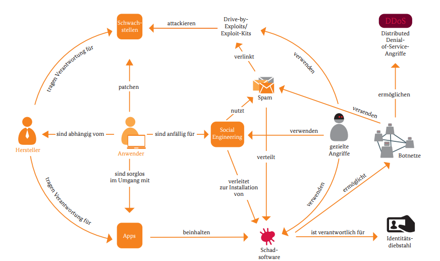

Sicherheitskonzepte
Archivierte Anleitung
Dieser Artikel wurde archiviert, da er - oder Teile daraus - nur noch unter einer älteren Ubuntu-Version nutzbar ist. Diese Anleitung wird vom Wiki-Team weder auf Richtigkeit überprüft noch anderweitig gepflegt. Zusätzlich wurde der Artikel für weitere Änderungen gesperrt.
 Computerviren, Würmer, Trojaner, Botnetze etc. richten Schaden an – sowohl auf dem eigenen Computer als auch in Unternehmen, durch den Ausfall von Diensten, Servern oder Datenverlust. Fast alle Schadprogramme (engl. Malware) richten sich dabei gegen Windows bzw. Windowssysteme. Dies liegt zum einen daran, dass Windows noch immer das – mit Abstand – verbreitetste Betriebssystem für Desktop-Rechner/Endanwender ist.
Computerviren, Würmer, Trojaner, Botnetze etc. richten Schaden an – sowohl auf dem eigenen Computer als auch in Unternehmen, durch den Ausfall von Diensten, Servern oder Datenverlust. Fast alle Schadprogramme (engl. Malware) richten sich dabei gegen Windows bzw. Windowssysteme. Dies liegt zum einen daran, dass Windows noch immer das – mit Abstand – verbreitetste Betriebssystem für Desktop-Rechner/Endanwender ist.
Ein zweiter, genau so wichtiger Punkt ist die natürliche Diskrepanz zwischen Sicherheit und Komfort – beides zusammen geht nicht oder endet oft in einem (faulen) Kompromiss. Zwar kündigt Microsoft immer wieder an, die Computerwelt sicherer zu machen, allerdings ist es nach wie vor so, dass es dringend angeraten ist, einen Windows-PC mit einer (inzwischen integrierten) Firewall und einem Viren-/Spywarescanner auszustatten, vor allem dann, wenn man regelmäßig im Internet surft. Firewalls und insbesondere Virenscanner sind heute ein eigener, umfangreicher Bereich bei kommerzieller Software.
Es geht aber auch ohne solche Programme, wenn man ein geeignetes Betriebssystem nutzt, das vergleichsweise weit weniger anfällig gegen Malware ist: Ubuntu oder eine andere Linux-Distribution.
"Es gibt keinen vernünftigen Grund, warum Computer zunächst unsicher konzipiert und dann vom Benutzer abgedichtet werden müssen."

Bildquelle: BSI 
Ist Linux wirklich sicherer als Windows?¶
Oft wird behauptet, Linux sei eigentlich konzeptionell gar nicht sicherer als Windows. Sobald es sich weiter verbreite, müssten die Anwender mit einer wahren Flut an Linux-Schadsoftware rechnen, so wie man es unter Windows schon kennt. In der Tat werden Sicherheitslücken in Software umso intensiver genutzt, je populärer ein System oder Programm ist. Dagegen spricht aber, dass Linux umso häufiger eingesetzt wird, je "wichtiger" ein System ist. Mehr als die Hälfte aller Server läuft mit Linux (z.B. auch die Serverfarmen der Filmindustrie oder von Google), Netzknoten des Internet und anderer Netze sowie derzeit 489 der 500 schnellsten Superrechner (Stand: Mitte 2015) und viele andere Geräte, auf denen man es kaum vermuten würde - inzwischen auch auf den meisten Smartphones. Man könnte also mit der "richtigen" Linux-Schadsoftware die halbe Welt kontrollieren, wenn man sie schreiben und verbreiten könnte. "Konzeptionell" bedeutet außerdem noch lange nicht, dass dieses Konzept strikt im gesamten System fehlerfrei und ausnahmslos umgesetzt ist.
"Ein Konzept zu haben, ist eine Sache – aber man sollte es auch vernünftig umsetzen."
Aber es gibt zwischenzeitlich auch Schadsoftware, die Lücken z.B. im Firefox oder Adobe Reader nutzt – beides Programme, die auch unter Ubuntu laufen bzw. rege genutzt werden. Praktisch spielen die Lücken und deren Ausnutzung (Exploit) unter Ubuntu/Linux kaum eine Rolle, weil die meiste Schadsoftware letztendlich doch ein Windows als Unterbau erwartet.
Vom Sicherheitskonzept her sind Linux und Windows NT (als auch dessen Nachfolger XP, Vista, 7, 8 und aktuell 10) gar nicht so verschieden:
Bei beiden Systemen ist ein wesentlicher Teil des Konzeptes, dass es Benutzer mit unterschiedlichen Privilegien gibt. Unter Linux kann ein Benutzer in der Regel nur seine persönlichen Daten löschen. Windows wurde hingegen bis einschließlich Windows XP so ausgeliefert, dass der Benutzer von Anfang an mit vollen Administratorrechten arbeitet. Jeder unbedarfte Mausklick kann somit das gesamte System zerstören oder es mit einem Computerschädling infizieren. Schlimmer noch: Die Arbeit als Nutzer mit eingeschränkten Benutzerrechten ist oft eher dornenreich. Erst mit Windows Vista wird das Konzept durch zusätzliche Sicherheitsabfragen und -mechanismen teilweise umgesetzt. Der zuerst angelegte Benutzer hat jedoch nach wie vor in weiten Teilen noch Administrator-Rechte. Unter Ubuntu hat auch der zuerst angelegte Benutzer nach dem Systemstart keine administrativen Rechte. Diese muss er explizit anfordern (z.B. mit sudo) und per Passwort bestätigen. Und auch dann sind diese nur für eine bestimmte Zeit (z.B. 15 Min.) gültig.
Es ist sicher nicht Teil des Sicherheitskonzeptes von Windows, unsichere Dienste in der Voreinstellung im Internet anzubieten. Allerdings wurde hier in Teilbereichen den Benutzerwünschen nach mehr Bequemlichkeit nachgegeben. Auch bei Linux (Ubuntu) gehört das nicht zum Konzept, und Ausnahmen kommen in der Grundeinstellung nicht vor.
Aus diesen beiden Punkten ergibt sich die Notwendigkeit von Virenscannern und Firewalls: Flickwerk für Mängel eines Produktes, die so anderswo gar nicht existieren.
Natürlich braucht man für einen erfolgreichen Angriff nicht nur ein Ziel, sondern auch einen Angriffspunkt, der zum Ziel führt. Bei Linux ist zur Kaperung eines Computers eine Kombination mehrerer Sicherheitslücken zwingend erforderlich, unter Windows reicht unter Umständen ein unbedarfter Klick im Internet Explorer. Insofern ist die Konzentration der Schädlinge auf Windows nicht alleine eine Folge der Verbreitung, sondern auch der Erfolgschancen eines Angriffs.
Was aber das ursprüngliche Konzept angeht: Linux entwickelt sich auch in dieser Hinsicht weiter. Man versucht beispielsweise, mit SELinux  die Rechtevergabe noch restriktiver und feinkörniger zu gestalten. SELinux ist grundsätzlich nachträglich installierbar. Ein weiteres Konzept, welches unter Ubuntu bereits integriert und aktiviert ist, ist AppArmor, welches systemnahe Dienste schützt und im Falle einer "feindlichen Übernahme" den Zugriff auf andere Teile / Verzeichnisse des Systems stark einschränkt. Im Unterschied zu vielen Windows-Schutzprogrammen wie Virenscanner und Firewalls arbeiten SELinux und AppArmor für den Nutzer völlig transparent und fordern den Nutzer nicht zu interaktiven Eingaben auf.
die Rechtevergabe noch restriktiver und feinkörniger zu gestalten. SELinux ist grundsätzlich nachträglich installierbar. Ein weiteres Konzept, welches unter Ubuntu bereits integriert und aktiviert ist, ist AppArmor, welches systemnahe Dienste schützt und im Falle einer "feindlichen Übernahme" den Zugriff auf andere Teile / Verzeichnisse des Systems stark einschränkt. Im Unterschied zu vielen Windows-Schutzprogrammen wie Virenscanner und Firewalls arbeiten SELinux und AppArmor für den Nutzer völlig transparent und fordern den Nutzer nicht zu interaktiven Eingaben auf.
Brauche ich einen Virenscanner und/oder eine Firewall?¶
Sicherheitsprogramme unter Windows sind zwar unverzichtbar, betreiben aber zu einem großen Teil auch Augenwischerei: Virenscanner und Firewalls versuchen durch Symbole oder Meldungsfenster auf sich aufmerksam zu machen, damit der Anwender sich gut geschützt fühlt. Dummerweise kann auch ein Schädling den Virenscanner oder die Firewall deaktivieren oder verändern, wenn er einmal ins System gekommen ist. Schließlich hat ein Benutzer mit Administrator-Rechten völlige Freiheit – auch die, den Computer zu infizieren.
Zur Zeit ist unter Linux ein Virenscanner mangels Viren überflüssig. Es gibt zwar auch Virenscanner für Linux, aber diese dienen nur dazu, Dateien oder Mails auf Windowsviren zu untersuchen. Diese Situation beginnt sich zwar langsam zu ändern (Erpressungs-Trojaner für Linux stümpert – noch ), gilt aber grundsätzlich auch noch im Jahr 2017.
Auch eine "Personal Firewall" ist beim Desktopbetrieb von Ubuntu überflüssig. Eine Personal Firewall hat unter Windows zwei Aufgaben:
Sie blockiert Zugriffe aus dem Internet auf Dienste, die aus irgendwelchen Gründen auf dem Rechner laufen. Eine Ubuntu-Standardinstallation bietet im Internet erst gar keine Dienste an, also gibt es auch nichts, was man blockieren müsste. Im Gegenteil: Auch eine Firewall ist ja nur ein Stück Software und kann selbst Sicherheitslücken enthalten. Umso besser, wenn man auf sie verzichten kann.
Sie blockiert unerwünschte Zugriffe auf das Internet für Programme, die man absichtlich oder unabsichtlich (Viren, Trojaner) auf seinem Computer installiert hat. Beispielsweise Druckertreiber, die Verbrauchsdaten an den Hersteller melden, Medienplayer, die ihre Hersteller über die eigenen Musikvorlieben aufklären oder versteckte Spionageprogramme.
Unter der Software, die über die Ubuntu-Quellen installiert werden kann (die jeden Anwendungsbereich abdeckt, aber unter Umständen nicht das eigene Lieblingsprogramm enthält), gibt es keine solchen Spionageprogramme. Die bisher einzige bekannte Ausnahme ist die Shopping-Lens von Ubuntu, die aber auf Wunsch des Anwenders deaktiviert werden kann. Und eine "versehentliche" Softwareinstallation ist durch das konsequent eingehaltene Sicherheitskonzept nicht möglich. Hier gibt es also keinen Bedarf für eine Firewall.
Weitere Informationen zu "Personal Firewalls" findet man im gleichnamigen Wiki-Artikel. Erst wenn man Serversoftware nachinstalliert, die Dienste in einem lokalen Netz anbietet, aber nicht aus dem Internet erreichbar sein soll, wird eine Firewall benötigt.
Eine weitergehende und vom Betriebssystem unabhängige Lösung stellt die Verwendung eines Routers dar, der selbst mit einer konfigurierbaren Firewall ausgestattet ist. Damit ist der eigene Computer nicht direkt mit dem Internet verbunden. Allerdings kann auch die Firmware von Routern Lücken aufweisen, die im Allgemeinen nicht automatisch beseitigt werden.
Kann ich mein System trotzdem überprüfen?¶
Natürlich kann man mit Glück und viel Aufwand auch in ein Linux-System einbrechen, wobei der Aufwand bei einem Desktopsystem in keinem vernünftigen Verhältnis zum zu erwartenden Ertrag steht. Eine Überprüfung ist selbstverständlich möglich – aber sie sollte nicht von dem System aus erfolgen, das möglicherweise betroffen ist. Oder glaubt jemand, ein Einbrecher lässt die Alarmanlage an und versucht nicht, sich zu verstecken? Eben.
Verlässliche Checks gehen deshalb nur von außerhalb. Dafür gibt es zum Beispiel das Programm chkrootkit, mit dem man ein System untersuchen kann. Zum Beispiel von einer garantiert unverseuchten Live-CD wie Knoppix aus. Alles andere ist eher als Vorbeugung zu sehen. Es gibt so genannte "Intrusion-Detection"-Systeme (IDS), die einen Einbruch erkennen – genau so lange, bis der Einbrecher das Warnsystem deaktiviert und seine Spuren verschleiert hat. Außerdem sind IDS primär für Server interessant, zumal der Einbruchversuch erst einmal in der Flut der Daten, die in der Regel vom IDS geloggt werden, entdeckt werden muss. Dann hilft nur noch der externe Check. Unter Windows ist das im Prinzip genauso. Allerdings können hier die öfters aufpoppenden Fenster und blinkenden Symbole dazu führen, dass man aufgrund der vielen harmlosen bis nutzlosen Warnungen die entscheidende, wichtige Warnung aus lauter Gewohnheit weg klickt.
Ist Linux vollkommen sicher?¶
"Nein. Es ist weit davon entfernt, wenn auch nicht so weit wie andere..."
Es gibt immer mal wieder Sicherheitslücken in Linux, manche davon schwerwiegend. Sie werden allerdings üblicherweise innerhalb kürzester Zeit behoben – wenn man eine offiziell unterstützte Distribution und nicht eine völlig veraltete einsetzt! Außerdem sind die möglichen praktischen Auswirkungen von Sicherheitslücken aufgrund des konsequent eingehaltenen Sicherheitskonzeptes vergleichsweise gering, insbesondere auf Desktop-Rechnern. Allerdings sollte ein Benutzer die angebotenen Online-Updates auch ernst nehmen.
Das schnelle Schliessen von bekannten Sicherheitslücken bei Linuxsystemen wird ausserdem durch zwei Faktoren unterstützt. Zum einen dadurch, dass der Quellcode der Programme von jedem eingesehen und überprüft werden kann und zum anderen, dass Sicherheitslücken offen und transparent kommuniziert werden, statt beides geheim zu halten wie das bei nicht quelloffener Software gerne geschieht. Beide Faktoren führen dazu, das einmal entdeckte Sicherheitslücken bei grossen Distributionen in der Regel innerhalb von Stunden geschlossen werden.
Im Server-Bereich sind auch Linux-Server immer wieder Ziel von Hacker-Attacken. Der Angriff erfolgt hier im Regelfall aber nicht auf Linux bzw. den Kernel, sondern auf die darauf laufende Programme, die Dienste (in welcher Form auch immer) im Internet bereit stellen. Populär sind dabei Attacken wie Cross Site Scripting, SQL Injection oder die Ausnutzung von Lücken in unsauber programmierten PHP-Anwendungen. Oder die Lücke liegt in der Serveradministration wie z.B. im Falle der Linux Mint Website Anfang 2016: Linux Mint wurde über WordPress gehackt – und zwar gleich doppelt . Wie man sich (teilweise) dagegen schützen kann, wird im Artikel Apache/Sicherheit gezeigt.
Fazit¶
"Hundertprozentige Sicherheit gibt es nicht."
Die größte Gefahr sitzt in der Praxis vor dem Bildschirm: auch das beste Betriebssystem kann nicht verhindern, dass ein unvorsichtiger Anwender seine Bankdaten per unverschlüsselter E-Mail versendet oder gar an einen Phisher verrät. Auch die Installation von Programmen, die nicht aus den geprüften, offiziellen Paketquellen stammen, kann böse enden (siehe Fremdquellen).
Einerseits entfallen unter Linux bisher diffuse Gefahren wie Würmer, Viren, Spyware & Co. Dennoch ist es eine Sache gesunden Menschenverstands, bei sensiblen Daten prinzipiell wachsam zu sein. Und sich die folgenden beiden Grundsätze immer wieder vor Augen zu halten:
Sicherheit ist immer ein Balanceakt zwischen unbequem und komfortabel
ein Computer ist nur so sicher wie ein Benutzer im Umgang mit demselben
Links¶
Ubuntu als sicherstes Betriebssystem ausgezeichnet - Ikhaya, 01/2014
Enthält Unity Spyware? - zur Problematik der ab Ubuntu 12.10 integrierten Amazon-Suche
So You Want to Know How to Use Anti-virus Software on Ubuntu?
- älterer Artikel in der Ubuntu Community DocumentationHave I been pwned?
- Wurde mein Benutzerkonto gekapert?How to write a Linux virus in 5 easy steps
- ein Angriffsszenario, Blogbeitrag 02/2011Sicherheit unter Linux
- Artikel LinuxUser, 03/2006Verfehlte Schutzimpfung - Sicherheitsrisiken unter Linux
- Artikel EasyLinux, 11/2005
- Erstellt mit Inyoka
-
 2004 – 2017 ubuntuusers.de • Einige Rechte vorbehalten
2004 – 2017 ubuntuusers.de • Einige Rechte vorbehalten
Lizenz • Kontakt • Datenschutz • Impressum • Serverstatus -
Serverhousing gespendet von